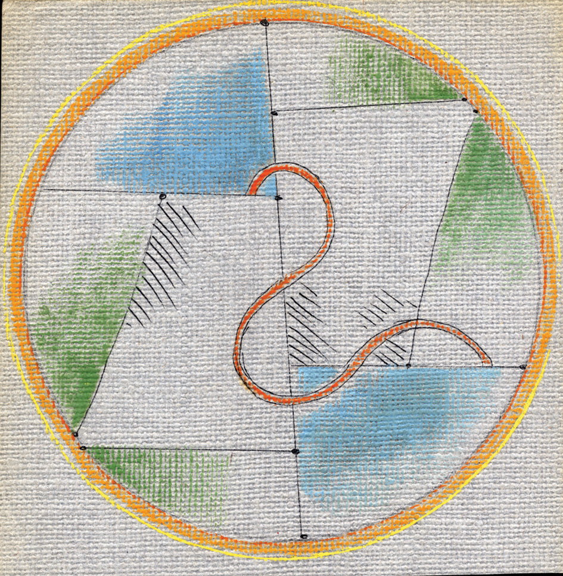

<!-- var images = [];
function preload() {
    for (var i = 0; i < arguments.length; i++) {
        images[i] = new Image();
        images[i].src = preload.arguments[i];
    }
}

//-- usage --//
preload(
    "http://domain.tld/gallery/image_001.jpg",
    "http://domain.tld/gallery/image_002.jpg",
    "http://domain.tld/gallery/image_003.jpg"
) -->
  <div class="mobile_menu"></div>
<nav class="topnav">



    <div class="dropdown">

      <button><a href="/index.html#magyar_dialogikus_iskola" id="navbar_dialogikus_iskola">Dialogikus Iskola</a></button>

      <div class="dropdown_content">
        <a href="/index.html#vadirat" id="navbar_vadirat">Vádirat</a>
        <a href="/index.html#alapallas" id="navbar_alapallas">Alapállás</a>
        <a href="/index.html#tortenet" id="navbar_tortenet">Történet</a>
        <a href="/index.html#harmincas_evek" id="navbar_harmincas_evek">A '30-as évek írásai</a>
        <a href="/index.html#negyvenot_utan" id="navbar_negyvenot_utan">1945 után</a>
      </div>
    </div>

    <div class="dropdown">

      <button><a href="/beszelgetesek.html" id="navbar_beszelgetesek_vitak_szeminariumok">Beszélgetések</a></button>

      <div class="dropdown_content">
        <a href="/beszelgetesek.html#csutortoki_beszelgetesek" id="navbar_csutortoki_beszelgetesek">Csütörtöki beszélgetések</a>
        <a href="/beszelgetesek.html#szabo_lajos_szeminariumai" id="navbar_szabo_lajos_szeminariumai">Szabó Lajos szemináriumai</a>
        <a href="/beszelgetesek.html#tabor_bela_preszokratikus_szeminariumai" id="navbar_tabor_bela_preszokratikus_szeminariumai">Tábor Béla preszókratikus szemináriumai</a>
        <a href="/beszelgetesek.html#vitak" id="navbar_vitak">Viták</a>
      </div>
    </div>


  <div class="dropdown">
    <button><a href="/SZL/szabolajos.html" id="navbar_szabo_lajos">Szabó Lajos</a></button>

    <div class="dropdown_content">
      <a href="/SZL/eletrajz/szabo_lajos_eletrajz.htm" id="navbar_szabo_lajos_eletrajz">Életrajz</a>
      <a href="/SZL/irasok/" id="navbar_szabo_lajos_irasok">Írások</a>
      <a href="/SZL/szeminariumi_eloadasok/" id="navbar_szabo_lajos_szeminariumi_eloadasok">Szemináriumi előadások</a>
      <a href="/SZL/" id="navbar_szabo_lajos_grafikak_kiallitasok">Grafikák, kiállítások</a>
      <a href="/SZL/" id="navbar_szabo_lajos_dusseldorfi_beszelgetesek">Düsseldorfi beszélgetések</a>
      <a href="/SZL/" id="navbar_szabo_lajos_konferenciak">Konferenciák</a>
      <a href="/SZL/" id="navbar_szabo_lajos_bibliografia">Bibliográfia</a>
    </div>
  </div>

  <div class="dropdown">
    <button><a href="/taborbela/taborbela.html" id="navbar_tabor_bela">Tábor Béla</a></button>

    <div class="dropdown_content">
      <a href="/horvathagnes/horvathagnes.html" id="navbar_tabor_bela_eletrajz">Életrajz</a>
      <a href="/suranyilaszlo/suranyilaszlo.html" id="navbar_tabor_bela_konyvek">Könyvek</a>
      <a href="/taboradam/taboradam.html" id="navbar_tabor_bela_ostortenet">"Őstörténet"</a>
      <a href="/horvathagnes/horvathagnes.html" id="navbar_tabor_bela_a_szimbolum_valsaga">A szimbólum válsága</a>
      <a href="/suranyilaszlo/suranyilaszlo.html" id="navbar_tabor_bela_preszokratikus_szeminariumok">Preszókratikus szemináriumok</a>
      <a href="/taboradam/taboradam.html" id="navbar_tabor_bela_egyeb_irasok">Egyéb írások</a>
      <a href="/horvathagnes/horvathagnes.html" id="navbar_tabor_bela_szaz">"Tábor Béla 100"</a>
      <a href="/suranyilaszlo/suranyilaszlo.html" id="navbar_tabor_belarol">Tábor Béláról</a>

    </div>
  </div>

  <div class="dropdown">
    <button><a href="/mandystefania/mandystefania.html" id="navbar_mandy_stefania">Mándy Stefánia</a></button>

    <div class="dropdown_content">
      <a href="/horvathagnes/horvathagnes.html" id="navbar_mandy_stefania_eletrajz">Életrajz</a>
      <a href="/suranyilaszlo/suranyilaszlo.html" id="navbar_mandy_stefania_versek">Versek</a>
      <a href="/taboradam/taboradam.html" id="navbar_mandy_stefania_kepzomuveszeti_irasok">Képzőművészeti írások</a>
      <a href="/horvathagnes/horvathagnes.html" id="navbar_mandy_stefania_egyeb_tanulmanyok">Egyéb tanulmányok</a>
      <a href="/suranyilaszlo/suranyilaszlo.html" id="navbar_mandy_stefania_irasok_megemlekezesek">Írások, megemlékezések</a>
    </div>
  </div>


  <div class="dropdown">
    <button class="tovabbi_szerzok"><a id="navbar_tovabbi_szerzok">További szerzők</a></button>

    <div class="dropdown_content">
      <a href="/horvathagnes/horvathagnes.html" id="navbar_horvath_agnes">Horváth Ágnes</a>
      <a href="/suranyilaszlo/suranyilaszlo.html" id="navbar_suranyi_laszlo">Surányi László</a>
      <a href="/taboradam/taboradam.html" id="navbar_tabor_adam">Tábor Ádám</a>
    </div>
  </div>


<div class="konyvtar_language_selector_container">
    <div class="dropdown">
      <button class="konyvtar"><a href="/konyvtar/konyvtar.html" id="navbar_konyvtar">Könyvtár</a></button>

      <div class="dropdown_content">
        <a href="/konyvtar/konyvtar.html#irasok" id="navbar_irasok">Írások</a>
        <a href="/konyvtar/konyvtar.html#galeria" id="navbar_galeria">Galéria</a>
        <a href="/konyvtar/konyvtar.html#esemenyek" id="navbar_esemenyek">Események</a>
      </div>
    </div>

    <div class="dropdown">
      <button class="language_selector"><a id="lang1">Magyar</a></button>
      

      <div class="dropdown_content">
        <button class="language_selection" id="lang2">English</button>
        <button class="language_selection" id="lang3">Deutsch</button>
        <button class="language_selection" id="lang4">Français</button>
      </div>
    </div>
  </div>
</nav>
